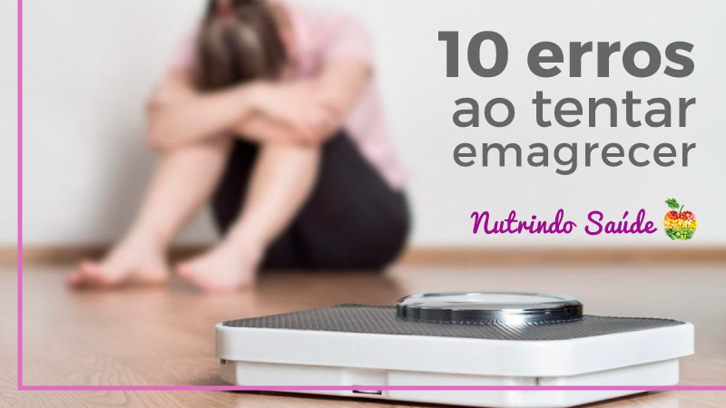
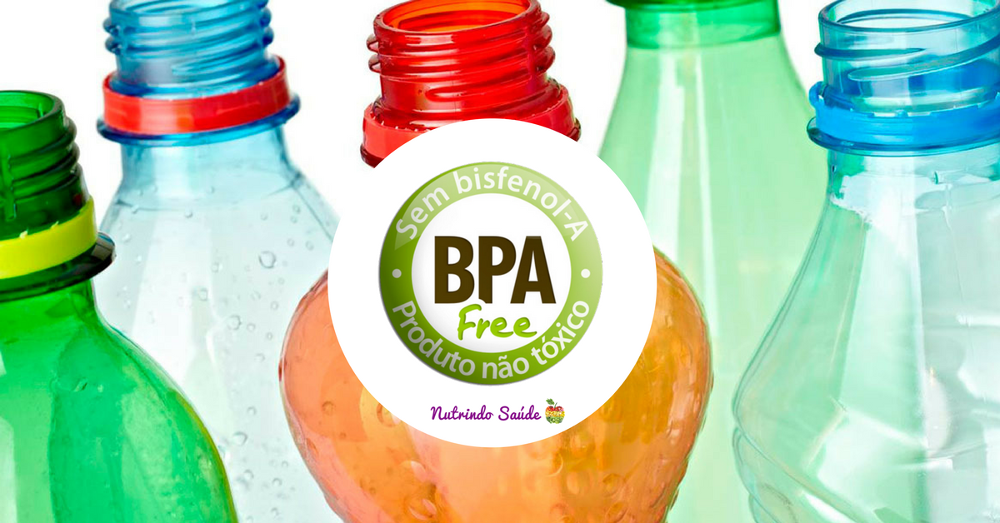
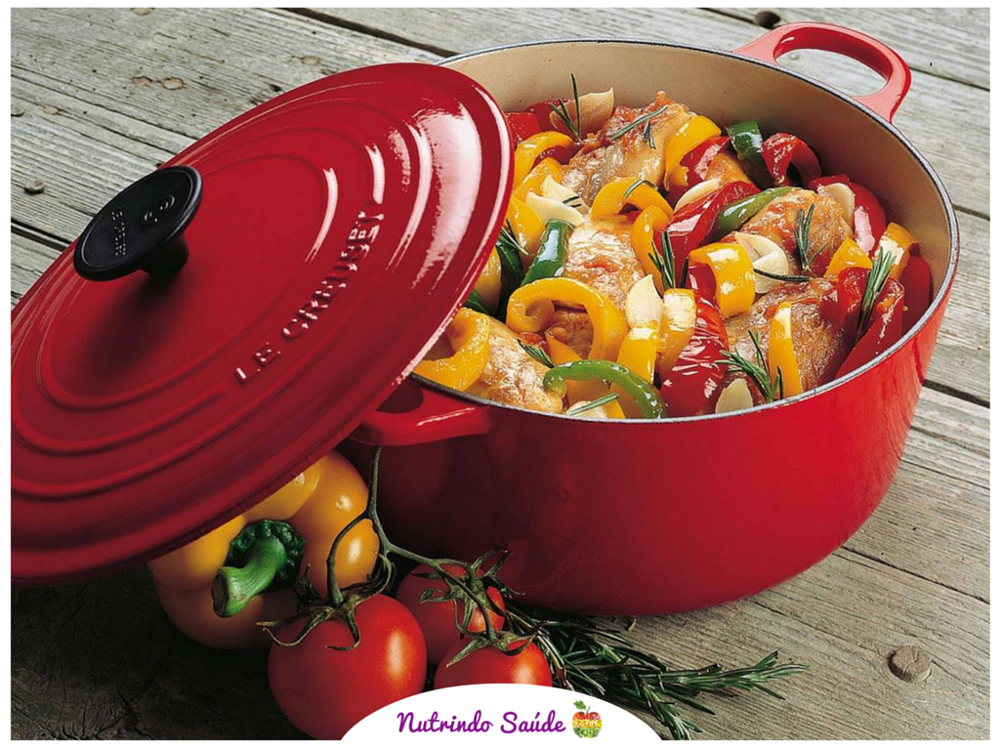

6 artigos sobre reeducação, emagrecimento, nutrição clínica, esportiva e ansiedade. Sem radicalismos, com metodo, com base.
Meu nome e Amanda Nobrega e sou nutricionista formada pela Universidade Federal do Estado do Rio de Janeiro (UNIRIO). Atendo quem chega cansado de dietas restritivas, buscando uma relacao mais leve com a comida.
Ao longo dos ultimos anos me dediquei a ajudar pessoas que buscam desde uma alimentação mais saudável atraves do processo de reeducação alimentar ate aquelas que possuem alguma patologia ou disfuncao alimentar que exige um maior cuidado.
Atualmente venho me especializando na nutrição esportiva, com o objetivo de auxiliar atletas que procuram um maior rendimento na práticas de atividades fisicas.
Promove habitos alimentares mais saudáveis, sem radicalismos. E o primeiro passo para que o paciente atinja os objetivos do planejamento nutricional.
Auxilia no emagrecimento e no tratamento de desordens esteticas, como queda de cabelo, unhas quebradicas, pele ressecada, celulite. A condicao pode ser corrigida com alimentação equilibrada.
Adequa as necessidades do atleta para obter um melhor rendimento na práticas de atividade fisica. O principal objetivo e fazer da alimentação combustivel, não obstaculo.
Focada na patologia especifica de cada paciente, orientando de acordo com o problema e estilo de vida. Voltada para pacientes com diabetes, dislipidemias, doenca coronariana, disturbios alimentares, entre outras.


